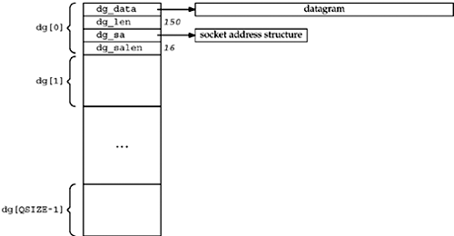

| [ Team LiB ] |
|
25.3 UDP Echo Server Using SIGIOWe now provide an example similar to the right side of Figure 25.1: a UDP server that uses the SIGIO signal to receive arriving datagrams. This example also illustrates the use of POSIX reliable signals. We do not change the client at all from Figure 8.7 and 8.8, and the server main function does not change from Figure 8.3. The only changes that we make are to the dg_echo function, which we show in the next four figures. Figure 25.2 shows the global declarations. Figure 25.2 Global declarations.sigio/dgecho01.c
1 #include "unp.h"
2 static int sockfd;
3 #define QSIZE 8 /* size of input queue */
4 #define MAXDG 4096 /* max datagram size */
5 typedef struct {
6 void *dg_data; /* ptr to actual datagram */
7 size_t dg_len; /* length of datagram */
8 struct sockaddr *dg_sa; /* ptr to sockaddr{} w/client's address */
9 socklen_t dg_salen; /* length of sockaddr{} */
10 } DG;
11 static DG dg[QSIZE]; /* queue of datagrams to process */
12 static long cntread[QSIZE + 1]; /* diagnostic counter */
13 static int iget; /* next one for main loop to process */
14 static int iput; /* next one for signal handler to read into */
15 static int nqueue; /* # on queue for main loop to process */
16 static socklen_t clilen; /* max length of sockaddr{} */
17 static void sig_io(int);
18 static void sig_hup(int);
Queue of received datagrams3–12 The SIGIO signal handler places arriving datagrams onto a queue. This queue is an array of DG structures that we treat as a circular buffer. Each structure contains a pointer to the received datagram, its length, a pointer to a socket address structure containing the protocol address of the client, and the size of the protocol address. QSIZE of these structures are allocated, and we will see in Figure 25.4 that the dg_echo function calls malloc to allocate memory for all the datagrams and socket address structures. We also allocate a diagnostic counter, cntread, that we will examine shortly. Figure 25.3 shows the array of structures, assuming the first entry points to a 150-byte datagram and the length of its associated socket address structure is 16. Figure 25.3. Data structures used to hold received datagrams and their socket address structures. Array indexes13–15 iget is the index of the next array entry for the main loop to process, and iput is the index of the next array entry for the signal handler to store into. nqueue is the total number of datagrams on the queue for the main loop to process. Figure 25.4 shows the main server loop, the dg_echo function. Figure 25.4 dg_echo function: server main processing loop.sigio/dgecho01.c
19 void
20 dg_echo(int sockfd_arg, SA *pcliaddr, socklen_t clilen_arg)
21 {
22 int i;
23 const int on = 1;
24 sigset_t zeromask, newmask, oldmask;
25 sockfd = sockfd_arg;
26 clilen = clilen_arg;
27 for (i = 0; i < QSIZE; i++) { /* init queue of buffers */
28 dg[i].dg_data = Malloc(MAXDG);
29 dg[i].dg_sa = Malloc(clilen);
30 dg[i].dg_salen = clilen;
31 }
32 iget = iput = nqueue = 0;
33 Signal(SIGHUP, sig_hup);
34 Signal(SIGIO, sig_io);
35 Fcntl(sockfd, F_SETOWN, getpid());
36 Ioctl(sockfd, FIOASYNC, &on);
37 Ioctl(sockfd, FIONBIO, &on);
38 Sigemptyset(&zeromask); /* init three signal sets */
39 Sigemptyset(&oldmask);
40 Sigemptyset(&newmask);
41 Sigaddset(&newmask, SIGIO); /* signal we want to block */
42 Sigprocmask(SIG_BLOCK, &newmask, &oldmask);
43 for ( ; ; ) {
44 while (nqueue == 0)
45 sigsuspend(&zeromask); /* wait for datagram to process */
46 /* unblock SIGIO */
47 Sigprocmask(SIG_SETMASK, &oldmask, NULL);
48 Sendto(sockfd, dg[iget].dg_data, dg[iget].dg_len, 0,
49 dg[iget].dg_sa, dg[iget].dg_salen);
50 if (++iget >= QSIZE)
51 iget = 0;
52 /* block SIGIO */
53 Sigprocmask(SIG_BLOCK, &newmask, &oldmask);
54 nqueue--;
55 }
56 }
Initialize queue of received datagrams27–32 The socket descriptor is saved in a global variable since the signal handler needs it. The queue of received datagrams is initialized. Establish signal handlers and set socket flags33–37 Signal handlers are established for SIGHUP (which we use for diagnostic purposes) and SIGIO. The socket owner is set using fcntl and the signal-driven and non-blocking I/O flags are set using ioctl.
Initialize signal sets38–41 Three signal sets are initialized: zeromask (which never changes), oldmask (which contains the old signal mask when we block SIGIO), and newmask. sigaddset turns on the bit corresponding to SIGIO in newmask. Block SIGIO and wait for something to do42–45 sigprocmask stores the current signal mask of the process in oldmask and then logically ORs newmask into the current signal mask. This blocks SIGIO and returns the current signal mask. We then enter the for loop and test the nqueue counter. As long as this counter is 0, there is nothing to do and we can call sigsuspend. This POSIX function saves the current signal mask internally and then sets the current signal mask to the argument (zeromask). Since zeromask is an empty signal set, this enables all signals. sigsuspend returns after a signal has been caught and the signal handler returns. (It is an unusual function because it always returns an error, EINTR.) Before returning, sigsuspend always sets the signal mask to its value when the function was called, which in this case is the value of newmask, so we are guaranteed that when sigsuspend returns, SIGIO is blocked. That is why we can test the counter nqueue, knowing that while we are testing it, a SIGIO signal cannot be delivered.
Unblock SIGIO and send reply46–51 We unblock SIGIO by calling sigprocmask to set the signal mask of the process to the value that was saved earlier (oldmask). The reply is then sent by sendto. The iget index is incremented, and if its value is the number of elements in the array, its value is set back to 0. We treat the array as a circular buffer. Notice that we do not need SIGIO blocked while modifying iget, because this index is used only by the main loop; it is never modified by the signal handler. Block SIGIO52–54 SIGIO is blocked and the value of nqueue is decremented. We must block the signal while modifying this variable since it is shared between the main loop and the signal handler. Also, we need SIGIO blocked when we test nqueue at the top of the loop. An alternate technique is to remove both calls to sigprocmask that are within the for loop, which avoids unblocking the signal and then blocking it later. The problem, however, is that this executes the entire loop with the signal blocked, which decreases the responsiveness of the signal handler. Datagrams should not get lost because of this change (assuming the socket receive buffer is large enough), but the delivery of the signal to the process will be delayed the entire time that the signal is blocked. One goal when coding applications that perform signal handling should be to block the signal for the minimum amount of time. Figure 25.5 shows the SIGIO signal handler. Figure 25.5 SIGIO handler.sigio/dgecho01.c
57 static void
58 sig_io(int signo)
59 {
60 ssize_t len;
61 int nread;
62 DG *ptr;
63 for (nread = 0;;) {
64 if (nqueue >= QSIZE)
65 err_quit("receive overflow");
66 ptr = &dg[iput];
67 ptr->dg_salen = clilen;
68 len = recvfrom(sockfd, ptr->dg_data, MAXDG, 0,
69 ptr->dg_sa, &ptr->dg_salen);
70 if (len < 0) {
71 if (errno == EWOULDBLOCK)
72 break; /* all done; no more queued to read */
73 else
74 err_sys("recvfrom error");
75 }
76 ptr->dg_len = len;
77 nread++;
78 nqueue++;
79 if (++iput >= QSIZE)
80 iput = 0;
81 }
82 cntread[nread]++; /* histogram of # datagrams read per signal */
83 }
The problem that we encounter when coding this signal handler is that POSIX signals are normally not queued. This means that, if we are in the signal handler, which guarantees that the signal is blocked, and the signal occurs two more times, the signal is delivered only one more time.
Consider the following scenario: A datagram arrives and the signal is delivered. The signal handler reads the datagram and places it onto the queue for the main loop. But while the signal handler is executing, two more datagrams arrive, causing the signal to be generated two more times. Since the signal is blocked, when the signal handler returns, it is called only one more time. The second time the signal handler executes, it reads the second datagram, but the third datagram is left on the socket receive queue. This third datagram will be read only if and when a fourth datagram arrives. When a fourth datagram arrives, it is the third datagram that is read and placed on the queue for the main loop, not the fourth one. Because signals are not queued, the descriptor that is set for signal-driven I/O is normally set to nonblocking also. We then code our SIGIO handler to read in a loop, terminating only when the read returns EWOULDBLOCK. Check for queue overflow64–65 If the queue is full, we terminate. There are other ways to handle this (e.g., additional buffers could be allocated), but for our simple example, we just terminate. Read datagram66–76 recvfrom is called on the nonblocking socket. The array entry indexed by iput is where the datagram is stored. If there are no datagrams to read, break jumps out of the for loop. Increment counters and index77–80 nread is a diagnostic counter of the number of datagrams read per signal. nqueue is the number of datagrams for the main loop to process. 82 Before the signal handler returns, it increments the counter corresponding to the number of datagrams read per signal. We print this array in Figure 25.6 when the SIGHUP signal is delivered as diagnostic information. The final function (Figure 25.6) is the SIGHUP signal handler, which prints the cntread array. This counts the number of datagrams read per signal. Figure 25.6 SIGHUP handler.sigio/dgecho01.c
84 static void
85 sig_hup(int signo)
86 {
87 int i;
88 for (i = 0; i <= QSIZE; i++)
89 printf("cntread[%d] = %ld\n", i, cntread[i]);
90 }
To illustrate that signals are not queued and that we must set the socket to nonblocking in addition to setting the signal-driven I/O flag, we will run this server with six clients simultaneously. Each client sends 3,645 lines for the server to echo, and each client is started from a shell script in the background so that all clients are started at about the same time. When all the clients have terminated, we send the SIGHUP signal to the server, causing it to print its cntread array.
linux % udpserv01
cntread[0] = 0
cntread[1] = 15899
cntread[2] = 2099
cntread[3] = 515
cntread[4] = 57
cntread[5] = 0
cntread[6] = 0
cntread[7] = 0
cntread[8] = 0
Most of the time, the signal handler reads only one datagram, but there are times when more than one is ready. The nonzero counter for cntread[0] is when the signal is generated while the signal handler is executing, but before the signal handler returns, it reads all pending datagrams. When the signal handler is called again, there are no datagrams left to read. Finally, we can verify that the weighted sum of the array elements (15899 x 1 + 2099 x 2 + 515 x 3 + 57 x 4 = 21870) equals 6 (the number of clients) times 3,645 lines per client. |
| [ Team LiB ] |
|